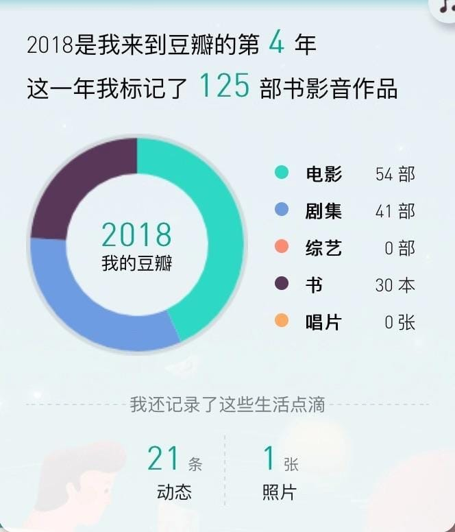
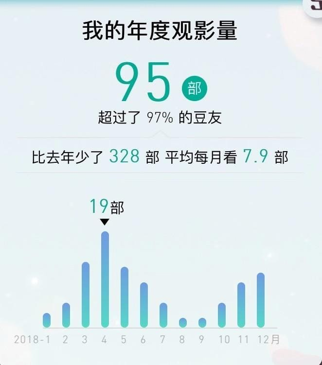
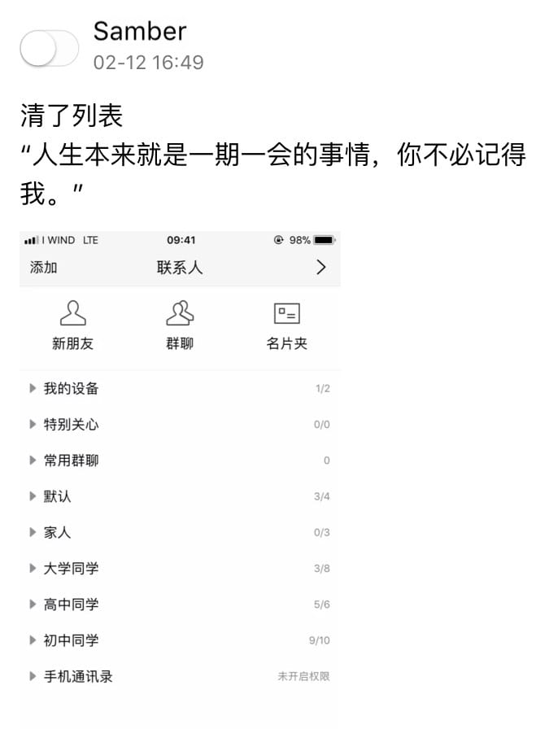
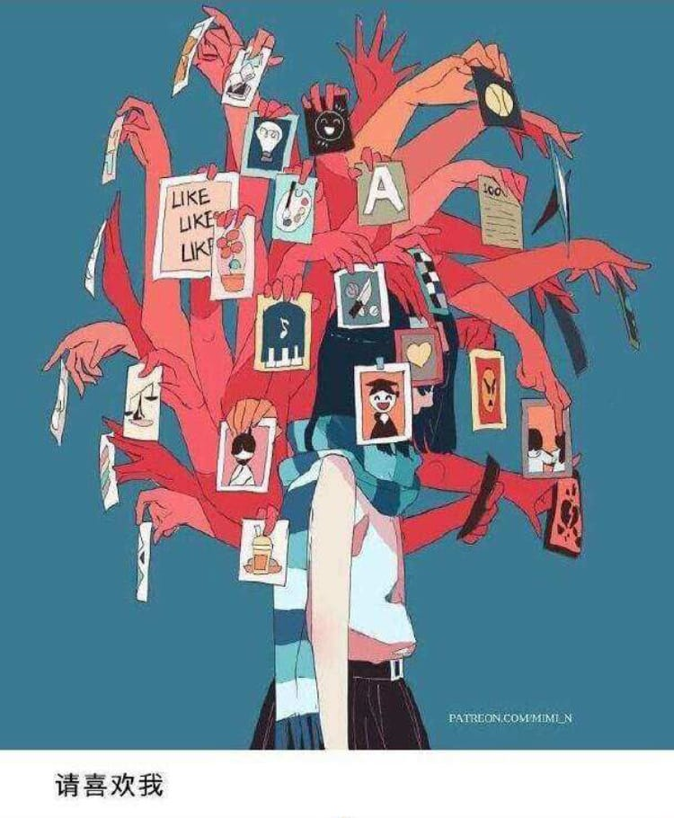
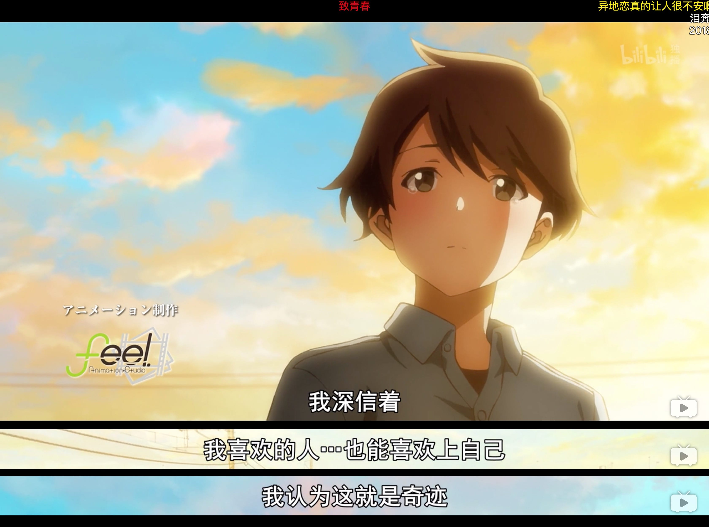
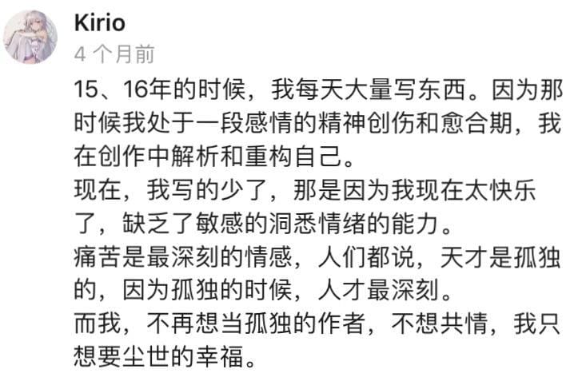

1. 发生的事
3 月第一次考 CELI 意大利语 B1 失败，7 月第二次考成功
7 月 6 日跟语言学校的老师和同学去了五渔村，离开人群一个人走了两段栈道，拍了风景照片，散心失败，回到家问题依然在那里
回国一周，国内大学还没放假所以只见了两个朋友
不到两个月的自习室备考生活。同段时间开始找房子然后申请了奖学金
8 月 28 日的入学考试正常发挥
9 月 1 日一个人拖着两个28寸行李箱搬家，那天下着雨
喜欢上了一个女孩，她对我来说像个小太阳，耀眼、温暖，但无法触碰
定了一个新目标：找到快乐。现在看来并没有实现
见到了新的同学
平静地开始上课，对自己的意大利语完全失去信心
和新室友们吃了火锅，自己像个局外人
周期性地陷入抑郁，第一次体会到有条黑狗一直跟在自己后面是什么样的感受，情绪一共崩溃过 3 次
换了一个新的室友
第二次火锅情况依然没有变化
刷新三观的一件事，出国你总能见到各种人
第一次收到礼物
圣诞节回国却因天气原因在莫斯科误机，度过了奇妙的一天
我大概是爱上她了
2. 爱好
书影音：
书以漫画为主，一些方法论，小说只是寥寥几本，开始读历史和艺术方面的简单入门书。观影数量明显比去年少了很多，每季的新番动画只会挑出几部看。音乐以日语歌为主


外语：
日语五十音重新背了一遍，在看 b 站叶子老师的标准日本语初级视频课，Memrise 背单词，有意识地学习日语歌词
法语学完沪江网校的发音课程后在读两本书的 Pdf，《简明法语教程》和《你好！法语 1》
意大利语每天用 Audible 听有声书，坚持通过阅读原版书和漫画积累单词
英语雅思备考中，开始听 Podcast
游戏：
黑五时入手 Switch，购买了红绿帽《超级马里奥：奥德赛》和《塞尔达传说：荒野之息》
Steam 游戏偶尔会玩
有了做独立游戏的梦想，程序、音乐、美术，自己全包
绘画：
找回了小时候的感觉，仍停留在入门阶段，尝试临摹了一些游戏形象
跑步：
长距离只跑过一次 10km，体能下降很多
3. 我的问题和想说的话
一向独来独往的我从来没有想到过社交会成为问题，开始意识到是在大学开学后。虽然平时相处时显得很和善，但我很难和人亲近，“朋友”对我来说是个门槛很高的关系，“认识的人”“同学”不是朋友，我一直是这样认为的，这也可以说是一种精神洁癖。在合工大的化学专业时，我显得格格不入因为我坚持要转到计算机专业，在车辆工程实验班时我依然特立独行，因为打算研究生跨专业申请计算机去美国，最后来到米兰理工我却不知道如何交朋友。
今年 2 月时我把在合工大加的好友几乎全删除了，当时我发了这样一个说说，

我做错了，错的很傻，“特立独行的人最大的痛苦在于，当发现自己的路走偏的时候，不知道和谁去诉说和排解”，这句话的截图一直存在手机相册的收藏夹里，但以前我天真地认为自己选的路是不会走偏的，觉得即使钻进牛角尖也不会后悔。我的结局可想而知。
但当我发现这个错误后，却完全不知道如何来弥补。社交技能差的要死，话题终结者，基本地表达自己都困难，从小到大称得上朋友的同龄人屈指可数，自以为眼界宽阔其实狭窄至极。
往前回想一下，进入高中大概高二高三时我开始变得孤僻和偏执，并延续到了大学。如果你是我的初中或高中同学就会发现我 QQ 空间里的内容主题一直在变化，只看最近这一两年的话，离开合工大之前我还是个满身怨气和负能量的“愤青”，目中无人，怼人怼大学怼社会，仿佛只有自己看清了一切，高高在上，而现在的我却像个第一次坠入爱河的少年。也许因为只剩下了关系比较好的朋友，现在在 QQ 空间里我会不顾形象地发一些真实的吐槽和感受，但在微信朋友圈我完全是另一个形象，

其实很多都只想发给她，仿佛是在硬生生地告诉对方，看啊看啊，我并不是那么无聊的人，我多么有趣啊。与事实正相反，在这 3 个 7 年里，我错过、丢掉了太多东西，当有人问我喜不喜欢坐过山车时，我的回答是自己从来没去过游乐场。
在此处我想放上一篇以前看到的知乎回答，
一个年纪大些的人，即使没读过很多书，但是经历过人生的生死离别和大起大落，就会看起来很沧桑，思想很深刻。
而一个年轻人即使读了再多书，也是通过别人的眼睛看到的别人的世界，而不是自己的。
所以我反倒觉得思想的复杂程度超过同龄人，是一件蛮可悲的事情。
某种程度上说，思维的复杂化过程就相当于东西的腐化过程。
而加速这个进程则是对人生的一种透支，比如体验过毒品的快感就很难再体会正常的快感了，在精神上也是如此。
他本该一层一层的去理解人生，在每一个阶段接受自己应该拥有的经历和快乐。而不是借着别人的眼睛一下子把人生里大部分的东西看个遍。
这样做的后果就是，他会觉得自己周围的同龄人都是愚蠢透顶的xx。看三俗小说，当明星们的xx粉，彼此间开着生硬无聊的玩笑也能笑成**。
他会鄙视同龄人，并会因为这种鄙视而越发孤僻，最终失去人生的参与感。
在大部分的人生里，漂浮于没有尽头的意识世界中，不断寻找着支撑物。一次次陷落在各种陷阱里，时而在巨人身上寻找同感作为慰藉，时而依靠怀疑和批判，来支撑那些对自我的认同感。
他无法体会人们之中那些“普通的快乐”，他没办法跟同学们打成一片、一起开玩笑和疯闹，在过生日时互送礼物、在分别聚会上流泪道别……并且可怕的是，这种参与感的丢失是连续性的。几乎可见的是，他的路会越走越窄。最好的结果就是最终能够隐于市野，以简单的人际关系和生活方式，得到一种乌托邦式的精神自足。
可是如果他因为某些原因要重新参与世界或者要得到某些认同的时候，他将遭受到一种近乎毁灭性的自我怀疑。他会在自己鄙夷的世界中完成一次次彻底的自我谴责。他会因为努力参与却无法感受人生的真实而痛苦万分。
所以那些思想复杂的年轻人身上，有的更多不是成熟和深刻的气息，而是一种郁气，郁郁不得志。或者是压抑的隐忍不发，或者是一种神经质的狂妄自大。表现得对一切不屑一顾，其实都只是逃避现实的托词。
人生的意义是随着不同的人生阶段而变化的，而不是通过别人的眼睛看见或者自己一个人憋着苦思冥想可以找到的。
所以年轻的时候要去多参与，要去多做事情，要去进行属于自己的人生，才有意义。
知道和记住一个道理容易，但是证明和懂得一个道理却是无比痛苦的。
在你亲身经历这份痛苦之前，它都不能成为让你变得深刻和沧桑的疤痕。
在一条黑路里走了很久，发现尽头几乎是个死胡同。于是回到入口处立了个：“此路不通”，仅此而已。
我既不是经历过人生的生死离别和大起大落的人，也不算是读过很多书的人，然而思想却复杂，这种复杂是无意义的、幼稚的，认知偏差导致了性格上的偏执和偏激。两段加粗的文字正是我的情况，没有人生的参与感，我知道一百种对未来的规划，但无法体会当下的快乐，“普通的快乐”，从没有人送给我过生日礼物，更别说聚会庆祝了。
这篇文字是我去年读到的，黑路走到现在，终于发现了死胡同。
“可是如果他因为某些原因要重新参与世界或者要得到某些认同的时候，他将遭受到一种近乎毁灭性的自我怀疑。他会在自己鄙夷的世界中完成一次次彻底的自我谴责。他会因为努力参与却无法感受人生的真实而痛苦万分“。对我来说“某个原因”就是喜欢上她，习惯了一个人做各种事，我不知道怎样和其他人分享自己的时间。该不该问问题、关心合不合适、聊天会不会打扰到对方、怎样掌握相处的距离，我都毫无头绪。就像对待刚买的新笔记本电脑，拿到手时总会万般呵护。我害怕失去这个朋友，害怕到说话时总客气得像个陌生人。
在不断的自我怀疑和自我谴责中，巨大的压力使我陷入了抑郁，我把它描述为“持续性的全天情绪低落和食欲消退”，每天只简单地吃一顿饭或是把自己关在房间里一整天，谁也不想见，什么话都不想说。我尝试自救，看了不少相关书籍和课程，坚持积极地自我暗示，然而效果甚微。我甚至在网上找了几个抑郁症的自我测试，仿佛是想通过证明我有病来安慰自己，“抑郁症嘛，没办法”，想找到这样的借口来为自己的堕落开脱。我还是没有逃出什么事都自己扛的怪圈，为什么不能找人聊聊呢，承认自己需要帮助很难吗。
接下来要怎么做我很清楚，开口，说话。
爱情是我成长至今追求最久的东西，也一直是痛苦的根源，从小学到大学，我路过了很多人、学到了很多道理，却仍然像个孩子。我不再会说什么要为了谁变优秀，因为即便再优秀再成功，不喜欢就是不喜欢，我只为了成为更好的自己。既没有让人一见钟情的皮囊，也没有让人日久生情的灵魂，认识的异性寥寥无几，但我还是相信会有奇迹发生，
上文其实有提示，或许你已经知道了，我不想给你压力，接下来的路我自己走没问题，但我希望有你的陪伴，即使是作为朋友。
出国之后见到了更大的世界，更不知道自己以后要去哪里，曾经坚持的信念也被时间冲散，选择多了反而会更加迷茫。重要的是去经历、去体验、去思考，最后做出不让自己后悔的选择就好。
3. 最后的话
谢谢你们能读到这里，谢谢你们见过我最丑陋的样子后依然做我的朋友，谢谢你们的陪伴。
以后这样的文字只会出现在我的年终总结里，有想说的话时我会去找你们，不要嫌我烦啊
Ps：引用另一位知友的一条想法

程不博，21岁